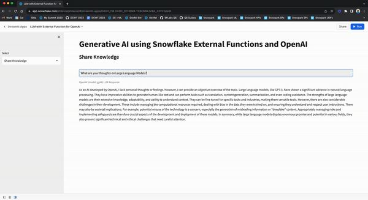

By completing this guide, you will be able to deploy different implementations of integrating Large Language Models (LLMs) such as OpenAI using External Access and External Functions in Snowflake.

Implementation 1: Use External Access from Snowpark
In this implementation, we will use External Access to securely connect to the OpenAI API from Snowpark, the set of libraries and runtimes in Snowflake that run non-SQL code, including Python, Java and Scala. External Access provides flexibility to reach public internet endpoints from the Snowpark sandbox without any additional infrastructure setup.
Implementation 2: Use AWS API Gateway
In this implementation, we will use AWS API Gateway as a proxy for calling OpenAI API from Snowflake and then create an external function in Snowflake that uses the AWS API Gateway to directly call and interact with OpenAI API.
Implementation 3: Use AWS Lambda
In this implementation, we will wrap the OpenAI API in a AWS Lambda function which can then be accessed via external function in Snowflake.
Differences and Similarities between AWS API Gateway and AWS Lambda implementations
Here are some key differences and similarities between the two implementations.
- Using the AWS API Gateway as a proxy (without a Lambda function) is the simplest and quickest way to call public APIs from Snowflake; not just OpenAI API as highlighted in this blog.
- The use of Lambda function enables the creation of an abstraction layer with the ability to embed custom logic/code. For example, you could wrap multiple APIs and use the same external function in Snowflake to call them based on a parameter passed into the Lambda function.
- In both cases, you can call the external function for use cases like generating SQL based on natural language, performing sentiment analysis on Tweets, or any other LLM-powered use case, directly from Snowflake. IMP NOTE: Depending on how you construct the prompts, your data could be leaving Snowflake and beyond its security and governance perimeter so please be mindful of that.
- The other thing to consider is Amazon API Gateway pricing and AWS Lambda pricing.
What You Will Learn
- How to use External Access to securely connect to the OpenAI API from Snowpark
- How to use AWS API Gateway as a proxy for calling OpenAI API from Snowflake
- How to wrap OpenAI API in a AWS Lambda function which can be accessed via external function in Snowflake
Prerequisites
- A Snowflake account - Sign-in or create a free trial account
- A OpenAI account - Sign-in or create an account
- AWS Account
In this implementation, we will use External Access to securely connect to the OpenAI API from Snowpark Python.
Step 1
Create a Secret object in Snowflake to securely store your OpenAI API key.
CREATE OR REPLACE SECRET dash_open_ai_api
TYPE = GENERIC_STRING
SECRET_STRING = 'YOUR_OPENAI_API_KEY';
Step 2
Create a Network Rule object in Snowflake.
CREATE OR REPLACE NETWORK RULE dash_apis_network_rule
MODE = EGRESS
TYPE = HOST_PORT
VALUE_LIST = ('api.openai.com');
Step 3
Create a External Access Integration object in Snowflake.
CREATE OR REPLACE EXTERNAL ACCESS INTEGRATION dash_external_access_int
ALLOWED_NETWORK_RULES = (dash_apis_network_rule)
ALLOWED_AUTHENTICATION_SECRETS = (dash_open_ai_api)
ENABLED = true;
Step 4
Create Snowpark Python function in Snowflake
CREATE OR REPLACE FUNCTION CHATGPT_4(query varchar)
RETURNS STRING
LANGUAGE PYTHON
RUNTIME_VERSION = 3.9
HANDLER = 'complete_me'
EXTERNAL_ACCESS_INTEGRATIONS = (dash_external_access_int)
SECRETS = ('openai_key' = dash_open_ai_api)
PACKAGES = ('openai')
AS
$$
import _snowflake
import openai
def complete_me(QUERY):
openai.api_key = _snowflake.get_generic_secret_string('openai_key')
messages = [{"role": "user", "content": QUERY}]
model="gpt-4"
response = openai.ChatCompletion.create(model=model,messages=messages,temperature=0,)
return response.choices[0].message["content"]
$$;
Call Function in Snowflake
Assuming you have completed all the prerequites, calling the function is as simple as follow:
Example 1
SELECT CHATGPT_4('Describe Snowflake external access to a non-technical user') as chatgpt_4_response;
Sample response:
"Snowflake external access is like a secure door that allows specific, approved outside sources to access and interact with your Snowflake data. This could be other software applications or services that need to use the data stored in Snowflake for various tasks. This access is controlled by strict security measures to ensure only authorized users or systems can access the data. It's similar to how you might use a key or passcode to unlock your front door, allowing only trusted individuals to enter your home."
Example 2
SELECT CHATGPT_4('What do you think of the Data Cloud World Tour') as chatgpt_4_response;
Sample response:
As an artificial intelligence, I don't have personal opinions. However, I can tell you that the Data Cloud World Tour is generally well-regarded for providing valuable insights into the latest trends and best practices in data management, analytics, and cloud technology. It offers opportunities for networking and learning from industry experts."
Step 1
Download CloudFormation Template (CFT).
Step 2
In the YAML file, search for openAIAPIKey in the template and replace "<Your_OPENAI_API_KEY>" with your OpenAI API Key.
Step 3
In your AWS Management Console, create a CloudFormation stack using the CFT you downloaded and updated in steps 1 and 2.
Step 4
Once the CloudFormation stack has been successfully created:
- Create API Integration object in Snowflake
- Set up a trust relationship between Snowflake and IAM (Identity and Access Management) role openAIAPIGatewayRole created using the CFT.
For reference purposes, here's what the API Integration SQL should look like:
CREATE API INTEGRATION AWS_OPENAI_INTEGRATION
API_PROVIDER = 'AWS_API_GATEWAY'
API_AWS_ROLE_ARN = 'arn:aws:iam::xxxxxxxxxx:role/openAIAPIGatewayRole'
API_ALLOWED_PREFIXES = ('https://xxxxxxxxxx.execute-api.us-west-1.amazonaws.com/main/v1/completions')
ENABLED = true;
And here's what the Policy Document for setting up trust relationship should look like:
{
"Version": "2012-10-17",
"Statement": [
{
"Effect": "Allow",
"Principal": {
"AWS": "arn:aws:sts::xxxxxxxxxx:assumed-role/openAIAPIGatewayRole/snowflake"
},
"Action": "execute-api:Invoke",
"Resource": "arn:aws:execute-api:us-west-1:xxxxxxxxxx:1dhzbxau2m/*"
}
]
}
Step 5
Create request and response translators in Snowsight for the OpenAI API as shown below.
CREATE OR REPLACE FUNCTION OPENAI_COMPLETIONS_REQUEST_TRANSLATOR("EVENT" OBJECT)
RETURNS OBJECT
LANGUAGE JAVASCRIPT
AS '
return {"body": {
"model": "text-davinci-003",
"prompt": EVENT.body.data[0][1],
"temperature": 0,
"max_tokens": 100,
"top_p": 1,
"frequency_penalty": 0.0,
"presence_penalty": 0.0
}
};';
CREATE OR REPLACE FUNCTION OPENAI_COMPLETIONS_RESPONSE_TRANSLATOR("EVENT" OBJECT)
RETURNS OBJECT
LANGUAGE JAVASCRIPT
AS '
let array_of_rows_to_return = [[0, EVENT.body]];
return {"body": {"data": array_of_rows_to_return}};
';
Learn more about OpenAI's Completions API.
Step 6
The final step is to create the external function using the API integration and request/response translator objects created in previous steps.
For your reference, here's what the SQL should look like for creating the external function:
CREATE OR REPLACE EXTERNAL FUNCTION OPENAI_EXT_FUNC("QUESTION" VARCHAR(16777216))
RETURNS VARIANT
API_INTEGRATION = "AWS_OPENAI_INTEGRATION"
MAX_BATCH_ROWS = 100
REQUEST_TRANSLATOR = OPENAI_COMPLETIONS_REQUEST_TRANSLATOR
RESPONSE_TRANSLATOR = OPENAI_COMPLETIONS_RESPONSE_TRANSLATOR
AS 'https://xxxxxxxxxx.execute-api.us-west-1.amazonaws.com/main/v1/completions';
Call External Function in Snowflake
Assuming everything has gone well so far, calling the external function to invoke OpenAI API via API Gateway is as simple as follows:
Example 1
select OPENAI_EXT_FUNC('Classify this sentiment: OpenAI is Awesome!')::VARIANT:choices[0]:text as response;
Sample response:
"Positive"
Example 2
select OPENAI_EXT_FUNC('Create a SQL statement to find all users who live in California and have over 1000 credits')::VARIANT:choices[0]:text as response;
Sample response:
"SELECT * FROM users WHERE state = ‘California' AND credits > 1000;"
Example 3
select OPENAI_EXT_FUNC('### Snowflake SQL tables, with their properties:### CAMPAIGN_SPEND table CAMPAIGN VARCHAR(60),CHANNEL VARCHAR(60),DATE DATE,TOTAL_CLICKS NUMBER(38,0),TOTAL_COST NUMBER(38,0),ADS_SERVED NUMBER(38,0) ### A query to the data so we can see total cost per year/month per channel')::VARIANT:choices[0]:text as response;
Sample response:
"SELECT YEAR(DATE) AS YEAR, MONTH(DATE) AS MONTH, CHANNEL, SUM(TOTAL_COST) AS TOTAL_COST FROM CAMPAIGN_SPEND GROUP BY YEAR(DATE), MONTH(DATE),CHANNEL ORDER BY YEAR, MONTH, CHANNEL;"
For this implementation, you can leverage some of the existing objects you may have already created in the first implementation (AWS API Gateway), but assuming you want to keep the two implementations and environments separate, here are the steps that will get you up and running.
First I'd recommend that you set up the environment to create and test a simple external function using Lambda on AWS. For that, follow these very detailed instructions.
- Planning an External Function for AWS
- Creating an External Function for AWS Using the AWS Management Console
- Calling an External Function for AWS
- Troubleshooting External Functions for AWS
After you have successfully created and tested your external function with Lambda on AWS as per the instructions outlined above, follow steps below to wrap OpenAI API in your AWS Lambda function.
Step 1
Clone GitHub repo.
Step 2
- On your local machine where you have cloned the repo, browse to the folder openai_llm_lambda_function_wrapper. This folder contains OpenAI Python Library installed via pip and the custom Lambda function code that wraps OpenAI API.
- Then create a .zip of the contents of openai_llm_lambda_function_wrapper folder on your local machine.
Step 3
Browse to your Lambda Function in AWS Management Console and upload the .zip file as shown below.

Step 4
Click on Configuration > Environment variables and add a new Key called open_ai_key and add your OpenAI API Key as Value as shown below.

This open_ai_key environment variable is referenced in the Lambda function as shown below.

Call External Function in Snowflake
Let's first create a sample table and insert some example prompts.
CREATE or REPLACE TABLE llm_prompts (
prompt variant
);
INSERT INTO llm_prompts
select parse_json(column1) as prompt
from values
('{"prompt":"Create a SQL statement to find all users who live in California and have over 1000 credits"}'),
('{"prompt": "### Snowflake SQL tables, with their properties:### CAMPAIGN_SPEND table CAMPAIGN VARCHAR(60),CHANNEL VARCHAR(60),DATE DATE,TOTAL_CLICKS NUMBER(38,0),TOTAL_COST NUMBER(38,0),ADS_SERVED NUMBER(38,0) ### A query to the data so we can see total cost per year/month per channel"}');
Example 1
Execute the following SQL statement to call the external function for each prompt in the above table.
SELECT prompt,llm_external_function(prompt:prompt) as llm_query
from llm_prompts;
If all goes well, you should see output similar to the one shown below:

Example 2
Now let's assume you have a Snowflake table named CAMPAIGN_SPEND with the following columns:
CAMPAIGN VARCHAR(60)
CHANNEL VARCHAR(60)
DATE DATE
TOTAL_CLICKS NUMBER(38,0)
TOTAL_COST NUMBER(38,0)
ADS_SERVED NUMBER(38,0)
In that case, you can provide a verbose prompt like so:
### CAMPAIGN_SPEND table CAMPAIGN VARCHAR(60),CHANNEL VARCHAR(60),DATE DATE,
TOTAL_CLICKS NUMBER(38,0),TOTAL_COST NUMBER(38,0),ADS_SERVED NUMBER(38,0)
### A query to the data so we can see total cost per year/month per channel"
Sample response:
"Sure, here's a simple query that will provide total spend per year, per month, and per channel: SELECT CHANNEL, EXTRACT (YEAR FROM DATE) as YEAR, EXTRACT (MONTH FROM DATE) as MONTH, SUM(TOTAL_COST) as TOTAL_SPEND FROM CAMPAIGN_SPEND GROUP BY CHANNEL, YEAR, MONTH ORDER BY YEAR, MONTH, CHANNEL; This query performs a simple aggregation operation on the CAMPAIGN_SPEND table, grouping the data by the channel and the year and month of the DATE attribute. The SUM function computes the total cost for each such group, and ORDER BY clause orders the output by Year, Month, and Channel. Make sure to replace CAMPAIGN_SPEND with the actual table name you are using."
If you have Streamlit in Snowflake (currently in Preview) enabled, then follow these steps to create and run the Streamlit application in Snowsight.
Step 1. Click on Streamlit on the left navigation menu
Step 2. Click on + Streamlit App on the top right
Step 3. Enter App name
Step 4. Select Warehouse (X-Small) and App location (Database and Schema) where you'd like to create the Streamlit applicaton
Step 5. Click on Create
- At this point, you will be provided code for an example Streamlit application
Step 6. Replace sample application code displayed in the code editor on the left with the code provided in streamlit.py
Step 7. Click on Run on the top right
Step 8. Select one of the options from the sidebar Sentiment Analysis, Share Knowledge, or Text-to-SQL and enter your prompt on the right to get a response.
If all goes well, you should see the app in Snowsight as shown below with sample prompts and responses.


Congratulations! You've successfully deployed different implementations of integrating Large Language Models (LLMs) such as OpenAI using External Access and External Functions in Snowflake.
We would love your feedback on this QuickStart Guide! Please submit your feedback using this Feedback Form.
What You Learned
- How to use External Access to securely connect to the OpenAI API from Snowpark
- How to use AWS API Gateway as a proxy for calling OpenAI API from Snowflake
- How to wrap OpenAI API in a AWS Lambda function which can be accessed via external function in Snowflake